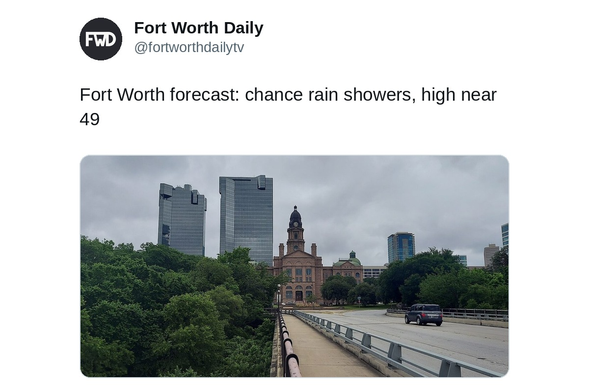
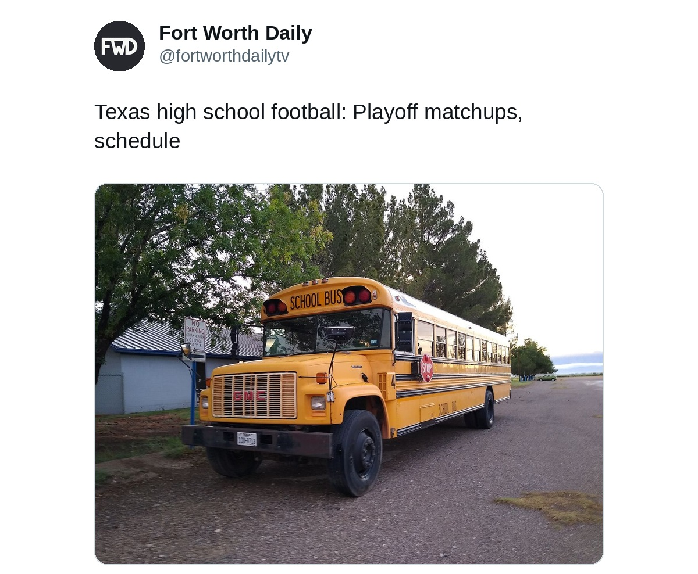
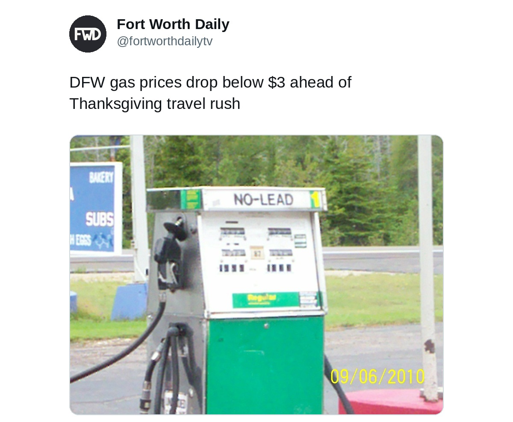

Freezing tonight in Fort Worth, low of 32

👍 ❤️ 😮 ✅ written to disk (dry run)
story + scoring
{
"source": "National Weather Service Fort Worth",
"kind": "nws_forecast",
"score": 1.95,
"relevance": 2,
"url": "https://forecast.weather.gov/MapClick.php?lat=32.7555&lon=-97.3308",
"image_license": "wikimedia-cc",
"image_credit": "Photo: DerekAyala27 via Wikimedia Commons (CC BY 4.0)"
}Texas high school football playoffs heat up as teams across the state compete in the regional round.

👍 ❤️ 😮 ✅ written to disk (dry run)
story + scoring
{
"source": "WFAA Sports",
"kind": "rss",
"score": 1.0686,
"relevance": 2,
"url": "https://www.wfaa.com/article/sports/high-school/hs-football/texas-high-school-football-playoff-matchups-schedule-uil-state-regional-round/287-72fa18a2-51be-4859-bf9b-b04251ad8af1",
"image_license": "wikimedia-cc",
"image_credit": "Photo: WhisperToMe via Wikimedia Commons (CC0)"
}North Texas drivers traveling for Thanksgiving are getting a break at the pump as average gas prices in the Metroplex fall below $3 a gallon. AAA reports the average price for a gallon of regular gas in Dallas-Fort Worth is $2.93.
That is down 2 cents from yesterday and 75 cents lower than a month ago, marking the lowest price in 8.5 months. Lower demand, cheaper winter fuel blends and falling oil prices are all helping push local prices down.

👍 ❤️ 😮 ✅ written to disk (dry run)
story + scoring
{
"source": "FOX 4 Dallas-Fort Worth",
"kind": "rss",
"score": 0.6442,
"relevance": 2,
"url": "https://www.fox4news.com/news/dfw-gas-prices-drop-below-3-ahead-thanksgiving-travel-rush",
"image_license": "openverse-cc",
"image_credit": "Photo: wachovia_138 (CC BY 2.0) via Flickr"
}